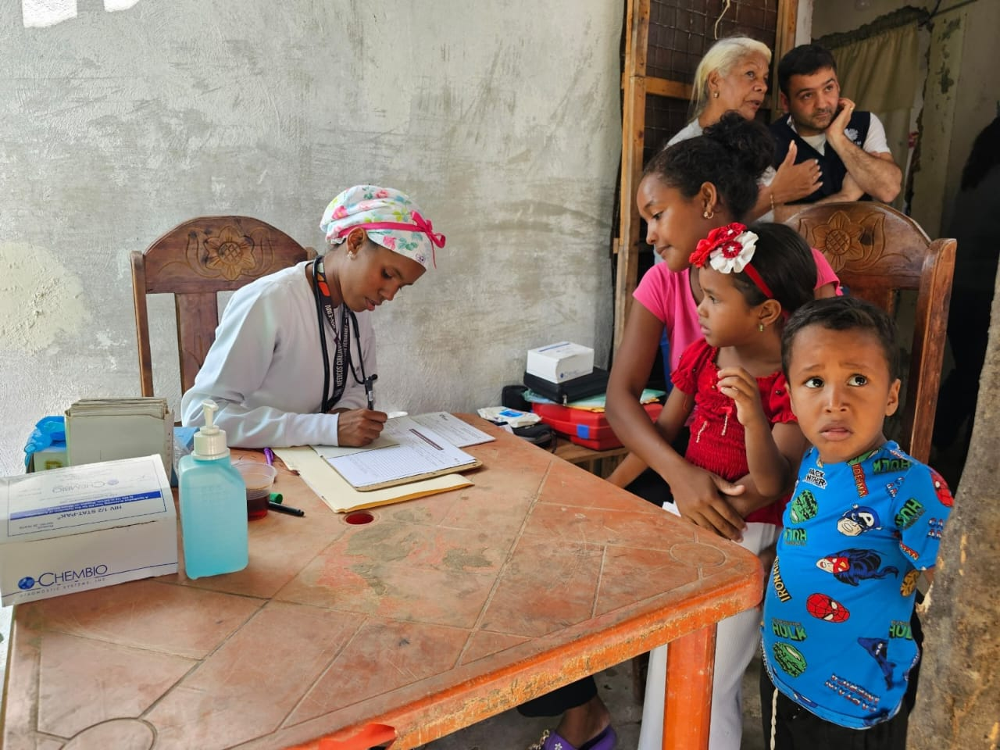
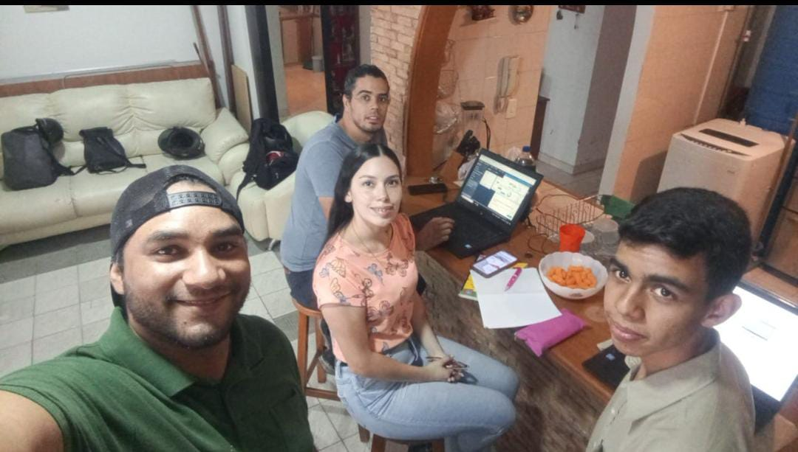
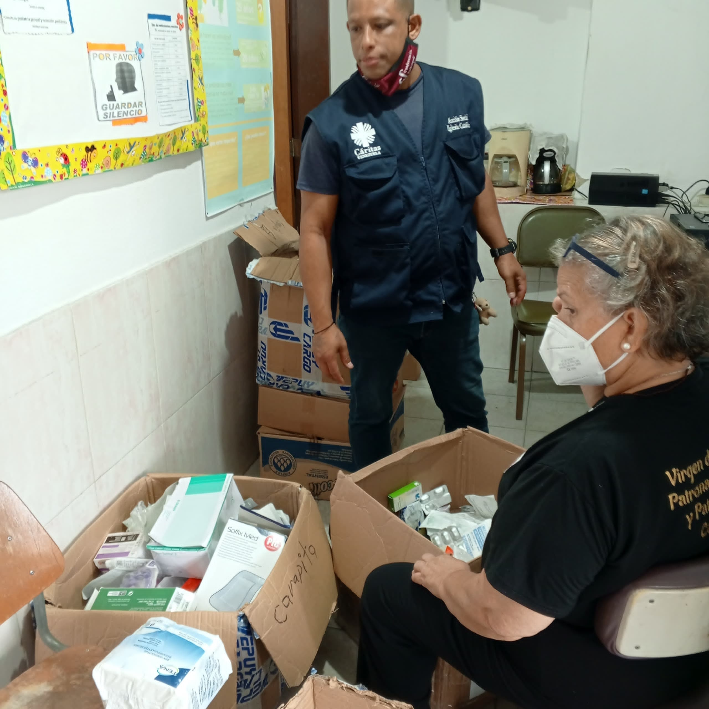

Scrum Master y Caritas

En la reciente reunión, se llevó a cabo un análisis detallado de los procesos internos de Cáritas Venezuela. Con la participación del Scrum Master, se profundizó en la comprensión de cómo esta organización aborda sus actividades diarias.
El punto central de la discusión giró en torno a las metodologías y herramientas empleadas por Cáritas para llevar a cabo sus proyectos y alcanzar sus objetivos.
Al finalizar la reunión, se logró un consenso generalizado sobre la importancia de estos procesos y se adquirió una visión más clara de cómo podemos aplicar algunos de estos principios en nuestro propio proyecto.
Como resultado de esta valiosa interacción, nuestro equipo cuenta ahora con una base sólida para futuras colaboraciones con Cáritas Venezuela.
Consulta Pediátrica

Durante nuestra visita a la jornada de salud organizada por Cáritas Venezuela, tuvimos la oportunidad de presenciar de cerca la dedicación de la pediatra encargada.
Su atención detallada y personalizada hacia cada niño nos permitió comprender a fondo la labor que realiza esta institución en el cuidado de la salud infantil.
La pediatra empleó una variedad de herramientas y técnicas para evaluar a cada paciente, desde la toma de signos vitales hasta la realización de exámenes físicos completos. Su enfoque integral nos mostró cómo Cáritas combina la atención médica con el cuidado emocional, brindando un apoyo integral a los niños y sus familias.
Esta experiencia nos ha enriquecido profesionalmente y nos ha inspirado a buscar formas de colaborar con Cáritas Venezuela en el futuro.
La pediatra atendió a un grupo niño con síntomas de desnutrición, aplicando un protocolo de atención integral que incluyó una evaluación nutricional detallada, la prescripción de suplementos vitamínicos y una orientación a la madre sobre prácticas de alimentación saludables.
Reunion de Estudios

Estamos llevando a cabo una reunión en casa para planificar y ajustar minuciosamente los sprints de cada módulo, asegurando así un desarrollo ágil y eficiente del sistema. En esta sesión, analizaremos el backlog de producto, estimamos la complejidad de las tareas y definimos los objetivos claros para cada iteración.
luego de esa reunion planificamos mas reuniones periodicamente, aplicando la metodologia Scrum, para cumplir con los obejtivos planteados y tambien compartimos como compañeros, luego de cada reunion.
Tambien en dichas reuniones vemos el potencial de cada uno y nos ayudamos a mejorar en las partes donde necesitemos apoyo o asesoria.
Jornada de Medicamentos

Cáritas, fiel a su misión de servir a los más necesitados, llevó a cabo una jornada de salud en una comunidad caraqueña que enfrenta grandes carencias.
Esta iniciativa solidaria permitió brindar atención médica integral a cientos de personas, quienes, debido a su situación económica o geográfica, tienen limitado acceso a servicios de salud de calidad.
Durante la jornada, un equipo de médicos, enfermeros y voluntarios atendió consultas médicas generales, realizó exámenes de laboratorio y suministró medicamentos esenciales. Además, se ofrecieron charlas educativas sobre temas como higiene, nutrición y prevención de enfermedades, con el objetivo de promover el bienestar integral de la comunidad.
Gracias a la generosidad de donantes y al compromiso de los voluntarios, Cáritas pudo llevar a cabo esta importante jornada de salud, demostrando una vez más su capacidad para responder a las necesidades más urgentes de la población venezolana.